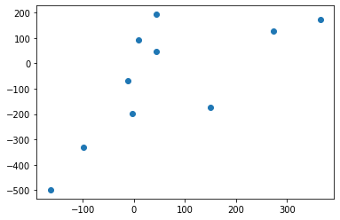
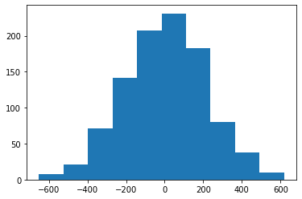
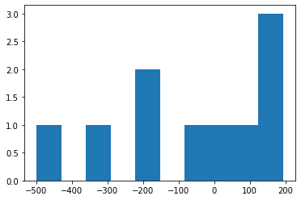
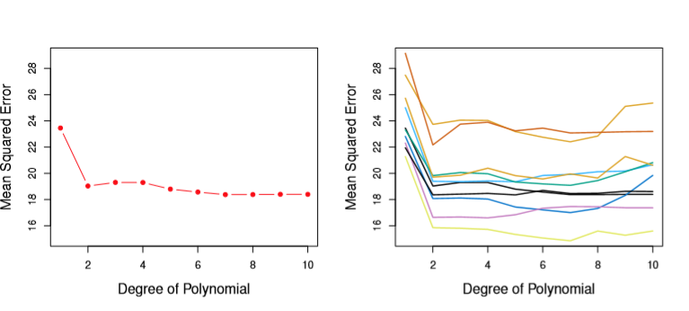

Cross Validation
Occasionally, our measures for model accuracy can be misleading. This typically occurs when our model fitting overly-generalizes to whatever data it was trained on, and the way we split out train/test sets don’t do a very good job of exposing the oversight.
To this end, we employ Validation Sets– data held out of our Training Sets– to approximate our Test Error.
Sample Model
Before we get started, let’s make our work reproducible.
%pylab inline
np.random.seed(0)Populating the interactive namespace from numpy and matplotlib
Now let’s build a model
from sklearn.datasets import make_regression
from sklearn.model_selection import train_test_splitWe’re going to deliberately make a lopsided balance between how much of our data is training and how much is test.
def make_data():
X, y = make_regression(n_informative=10, n_features=20,
n_samples=1000, noise=2)
return train_test_split(X, y, test_size=.01)train_X, test_X, train_y, test_y = make_data()
[arr.shape for arr in make_data()][(990, 20), (10, 20), (990,), (10,)]
And build a Decision Tree on top of it
from sklearn.tree import DecisionTreeRegressor
model = DecisionTreeRegressor()
model.fit(train_X, train_y)DecisionTreeRegressor(criterion='mse', max_depth=None, max_features=None,
max_leaf_nodes=None, min_impurity_decrease=0.0,
min_impurity_split=None, min_samples_leaf=1,
min_samples_split=2, min_weight_fraction_leaf=0.0,
presort=False, random_state=None, splitter='best')
Evaluating the Model
And if we revisit the Root Mean Squared Error as our measure of model accuracy, we see that this is perhaps a respectable level of error.
from sklearn.metrics import mean_squared_error
mse = mean_squared_error(test_y, model.predict(test_X))
rmse = np.sqrt(mse)
rmse200.2823964921704
However, looking at the distribution of predictions vs actuals, we can see that a lot of this error comes a few points in y_train.
plt.scatter(model.predict(test_X), test_y);
The model was fit to predict on a target distribution that looked basically normal
plt.hist(train_y);
by the (bad) luck of sampling, the 1% of y that made up test_y didn’t really look like that at all.
plt.hist(test_y);
So how do we ensure that we don’t get “gotcha’d” when the distribution/variation of the 1% we held out isn’t accurately captured by our training set?
Cross-Validation
Cross-Validation involves a second splitting step after you’ve removed your Test data from your starting population.
By training then scoring on this intermediate set of data before checking your Test accuracy, you have more information about the performance of your model.
Moreover, when used to direct training/hyperparameter search, withholding your data helps correct overfitting during training.
Validation Set
And so we’ll further split our Training dataset
train_X.shape, train_y.shape((990, 20), (990,))
A third will now be used for Validation
train_X, test_X, train_y, test_y = make_data()
train_X, validation_X, train_y, validation_y = train_test_split(train_X, train_y, test_size=.33)train_X.shape, train_y.shape((663, 20), (663,))
validation_X.shape, validation_y.shape((327, 20), (327,))
test_X.shape, test_y.shape((10, 20), (10,))
Refitting the model with the Validation records omitted
model = DecisionTreeRegressor()
model.fit(train_X, train_y)DecisionTreeRegressor(criterion='mse', max_depth=None, max_features=None,
max_leaf_nodes=None, min_impurity_decrease=0.0,
min_impurity_split=None, min_samples_leaf=1,
min_samples_split=2, min_weight_fraction_leaf=0.0,
presort=False, random_state=None, splitter='best')
And our performance on the Validation set is about 60 points better than our last test!
mse = mean_squared_error(validation_y, model.predict(validation_X))
rmse = np.sqrt(mse)
rmse143.2710672835756
Indeed, our model happens to be less overfit this time around.
mse = mean_squared_error(test_y, model.predict(test_X))
rmse = np.sqrt(mse)
rmse168.02073456013332
But the fact that our Validation MSE wound up being lower than our Test MSE was completely arbitrary, another consequence of the random sample.
Indeed, in Chapter 5 ISL uses multiple Validation sets to determine what the appropriate Polynomial Degree is for a simulated regression problem. The True Test Error is shown in the left chart, but the right chart demonstrates that your MSE can vary wildly by the sheer luck of how you sampled your data– though generally moving the same way as the Degree increases.
from IPython.display import Image
Image('images/diff_val_sets.PNG')
K-Fold Cross-Validation
What we want to do instead is repeat that test/train splitting process across multiple samples of data within our dataset.
We do this with K-Fold Cross Validation, which splits the dataset up into k sets, then trains on k-1 of them, testing against the holdout, ultimately returning each accuracy score.
Image('images/crossval.jpg')
model = DecisionTreeRegressor()train_X, test_X, train_y, test_y = make_data()from sklearn.model_selection import cross_val_score
scores = cross_val_score(# what model we use
model,
# data we'll feed it
train_X,
train_y,
# how we score each split
scoring='neg_mean_squared_error',
# how many cuts to make
cv=10)
accuracies = np.sqrt(-scores)
accuraciesarray([ 92.59567985, 106.70686122, 111.12034656, 100.3642714 ,
90.38853955, 94.77325883, 85.00335984, 97.94133301,
98.682085 , 98.72319924])
As we can see, there’s still a good amount of variation depending on which slice of data we were testing against.
accuracies.std()7.208537550908835
Therefore, we’ll average out all of the cross-validation scores to get a more stable estimate.
accuracies.mean()97.62989345115201
Effectively, taking these k different looks at our data means that our model has been evaluated in against every point in our training set. Thus when we read an MSE of 97.63, we don’t have to worry about whether or not we scored on some fringe part of the distribution or that we overfit.
Indeed, more-sophisticated approaches to Machine Learning leverage K-fold Cross Validation as an intermediate training step, the algorithm proceeds in the direction that minimizes the Cross Validation Error, then redefines the folds to prevent overfitting.